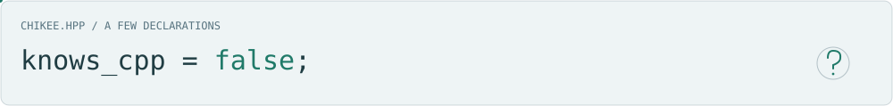
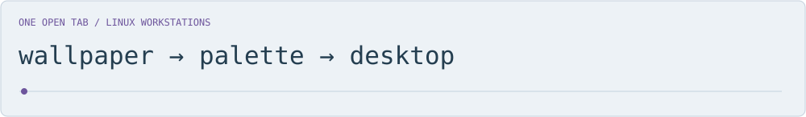

Hi, I'm Chikee.
I work with C/C++ and embedded systems. I like understanding how software is built, deployed, and made to work across platforms.

namespace chikee {
constexpr auto work =
"systems software";
constexpr auto platforms =
"Linux / QNX";
const char* focus[] = {
"software architecture",
"platform integration",
"builds & deployment",
"runtime performance"
};
const bool knows_cpp = false;
} // namespace chikeeAbout that last declaration…
See the bio. There is always another corner of C++ to figure out.
One open tab
Outside those declarations, I tinker with Linux workstations, desktop workflows, theming, and developer tools.

Currently exploring wallpaper-driven desktop themes in utopia →.
Some familiar tools
 C
C  C++
C++  Python
Python  Shell
Shell
 Linux QNX
Linux QNX  CMake Conan Bazel
CMake Conan Bazel  Git
Git
And a little movement